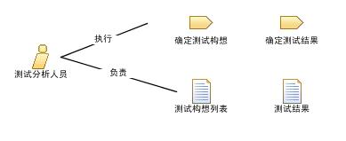

| 角色：测试分析人员 |
 |
|
关系
 |
|
| 修改 | |
|---|---|
| 流程使用情况 | |
主要描述
|
角色将执行任务和开发工作产品的职责组织成逻辑组。 每个角色都可以被分配给一个或多个人，而每个人也可以充当一个或多个角色。为测试分析人员角色配备人员时，需要同时考虑该角色所需的技能和为该角色分配人员时所能采取的不同方法。 在某些开发文化中，该角色被称为测试设计人员，或被视为专门化的测试员角色。 |
人员配备
| 技能 |
测试分析人员角色所需的相应技能和知识包括：
该角色主要负责：
|
|---|---|
| 分配方法 |
可以通过以下方法来分配测试分析人员角色：
还要注意，具体的技能需求因正在进行的测试的类型不同而有所不同。例如，成功分析系统装入测试需求所需要的技能就不同于分析系统功能测试需求所需要的技能。 |
更多信息
© Copyright IBM Corp. 1987, 2006. All Rights Reserved. |